2,024,121 Daisy Flowers Royalty-Free Images, Stock Photos & Pictures | Shutterstock
a

Hi! My name is Marion, and this is my Cumulative Assessment for Computer Science. I enjoy reading, trying new recipes, and drawing in my free time. In my time in the Intro to Computer Science class, I've learned not only to enjoy coding, but also expand and grow my knowledge about how to use code.org and the numerous types of programs embedded within the website.
Throughout this class, I have worked through countless assignments every other day for the entire school year. During this time, I expanded my skills in using whatever program Ms. Luna would throw our way next, and through many lessons (and a lot of trial and error), I would consider myself a very well-rounded coder when it comes to the basics of such. Even if some of these lessons aren’t new to me, I know that I still have grown and changed no matter what.